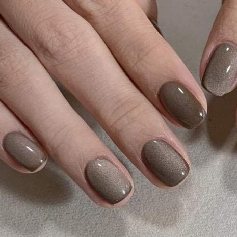

美甲與生活連結
款式分享
豬肉圓美甲的網站
美甲與生活的連結:
美甲讓人建立自信心，隨時保持精緻美麗。
美甲是為了自己的喜好而去製作。
美麗的事物不需要被做任何定義，只要自己喜歡它就是好款式。
世界上若沒有色彩展現自我，那必定會成為無聊的世界。
把下巴抬高，使思想煥發出光彩。
要想清楚，色彩到底是一種怎麼樣的存在，他能改變世界還有心情。
如果你常摳指甲、啃指甲、或是像我一樣經常斷裂，這些指甲的不完美都可以做專業美甲得到修復重塑 ！長期下來還可以改變甲型，使妳的雙手更顯修長美麗
女人愛美是天性，況且手是女人見人的第二門面，一般人通常看完臉蛋後接著一定是看手的啊~不知道有沒有人跟編編一樣一定會看別人的手手!!
希望大家能從這段話中有所收穫。造型設計可凸顯個性與品味
美甲款式簡易介紹:
1.在天氣舒適的情況下，建議大家往大地色著手，黃黑白皮都不會彩雷!

2.近期日系風格成為熱銷款式，用色大膽明亮。
3.深藍色透露著一點神祕感，搭配上法式線條變身成為知性美感。